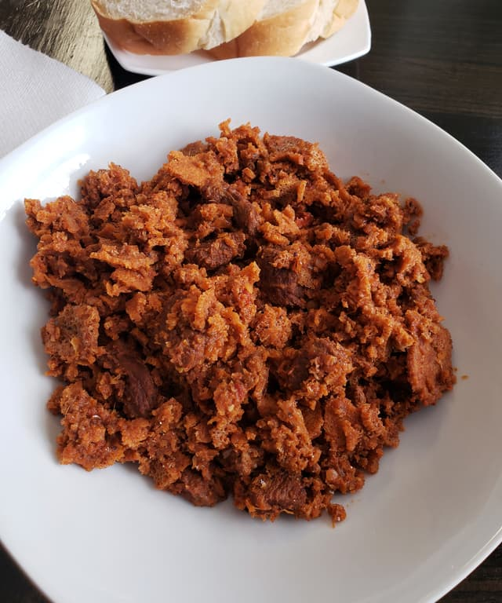

Qanta Firfir

Firfir is another one of the most popular Ethiopian dishes which is consumed for lunch, dinner, and even breakfast. It is an excellent way to use leftover injera that is past its prime but still edible.
INGREDIENTS
- 2 large chopped onions
- ¼ cup canola oil
- 1 ½ tbsp berbere
- 3 oz tomato paste
- 2 chopped tomatoes
- ½ cup water
- 2 tsp of minced ginger
- 4 cloves of garlic
- 3 ½ injera, torn into pieces
- 1 de-seeded jalapeno (or other hot green peppers) cut into thin strips
- 1 tbsp salt
DIRECTIONS
- Cook the onions for several minutes until they start to soften and turn translucent.
- Add the oil. When the oil is hot, add the berbere and stir.
- After a few minutes, add the tomato paste and cook for several more minutes.
- Add the chopped tomatoes, garlic, ginger, and a bit of salt, and cook on low-medium heat until the tomatoes are thoroughly cooked.
- Add the water and bring it to a simmer. It should look like a really thick tomato soup at this point.
- Add the injera and stir, gently chopping the injera as you mix it in.
- Continue cooking until the injera has absorbed all of the liquid.